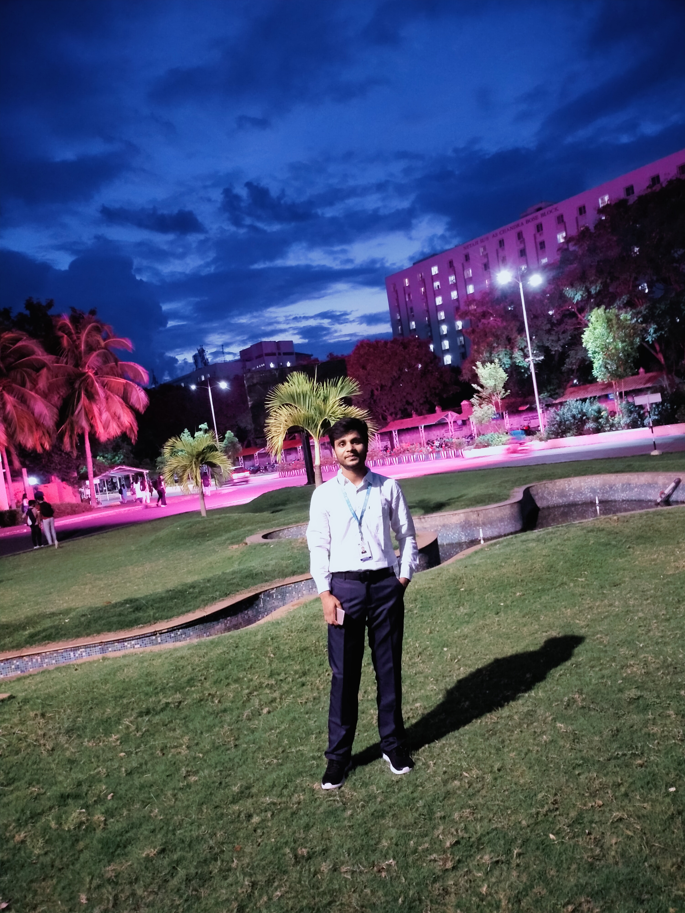

About me
>
- Introduction:
Hello, I am Hrithik Kumar, a dedicated and passionate second-year student pursuing a Bachelor of Technology (B.Tech) in Computer Science and Engineering (CSE) at VIT Vellore. I am driven by a deep interest in technology and a commitment to gaining comprehensive knowledge in this rapidly evolving field.
- Academic Journey:
My academic journey in VIT Vellore has been an exciting and enriching experience so far. Studying Computer Science and Engineering has allowed me to explore the intricacies of programming, software development, and the theoretical foundations of computer science. I am continuously learning and honing my skills in areas such as algorithms, data structures, database management, and more.
- Passion for Technology:
Beyond the classroom, I am an avid enthusiast of technology. I enjoy staying up-to-date with the latest developments in the tech world, participating in hackathons, and working on personal coding projects. This passion for technology not only complements my academic pursuits but also drives me to apply theoretical knowledge to practical, real-world scenarios.
- Extracurricular Activities:
believe in holistic development, and as a result, I actively engage in extracurricular activities. These experiences have helped me improve my leadership and teamwork skills. Being a part of clubs, societies, or volunteering initiatives allows me to balance my academic rigor with personal growth.
- Future Aspirations:
As I progress through my academic journey, I am setting my sights on a future where I can contribute meaningfully to the tech industry. Whether it's through innovative software development, research, or entrepreneurship, I am excited about the opportunities that lie ahead.